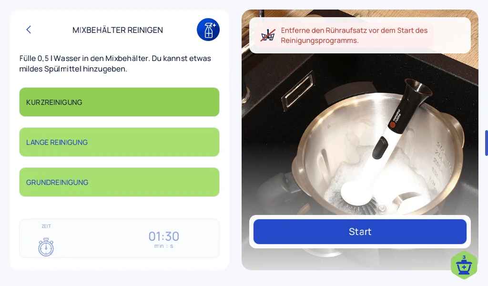
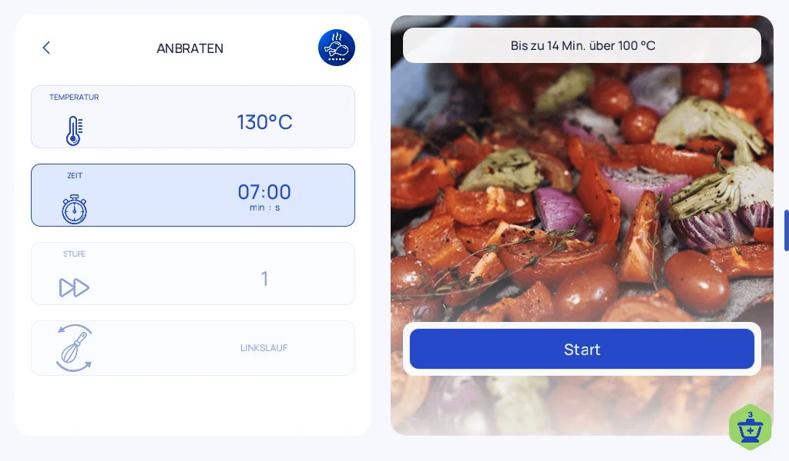
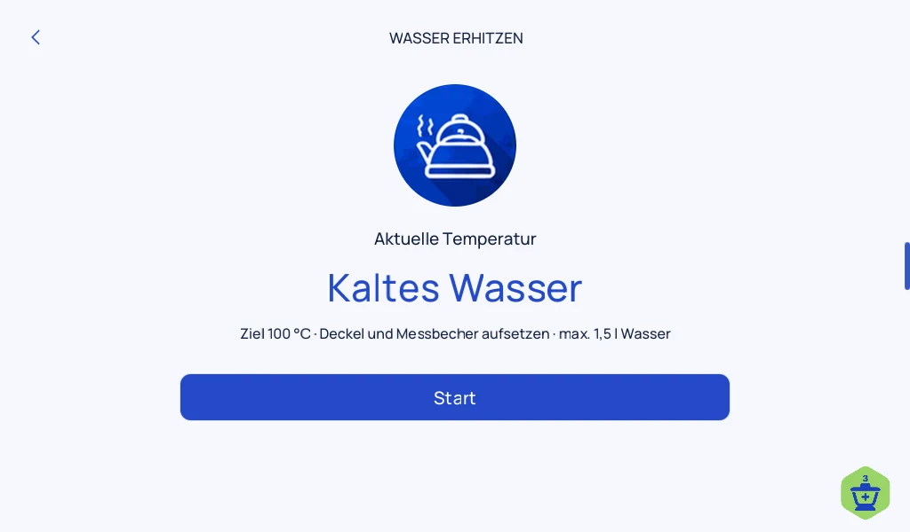
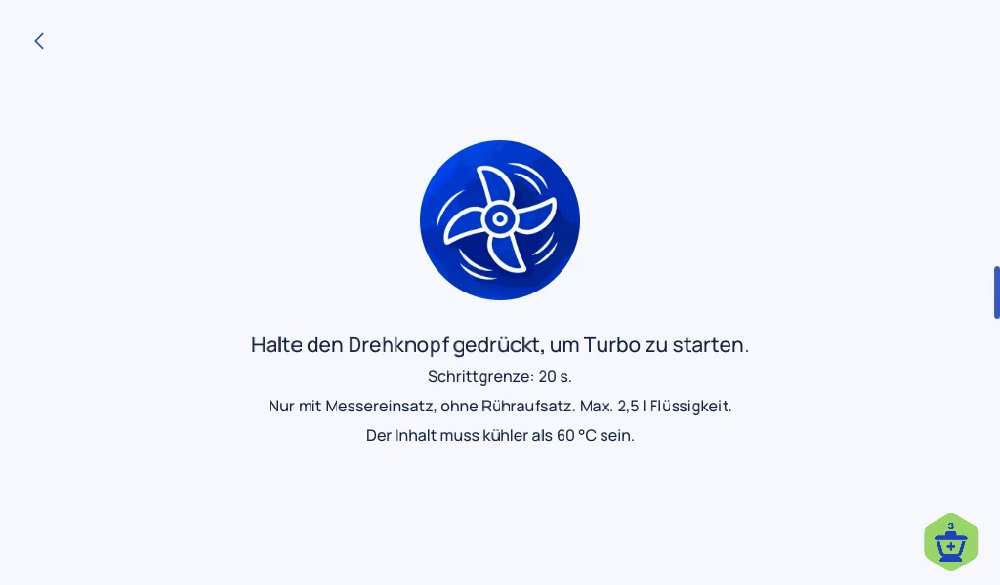
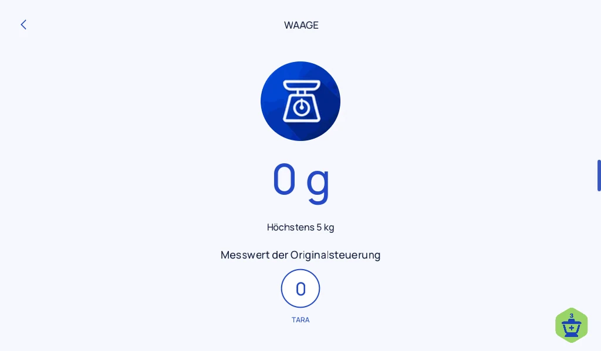

Monsieur Cuisine Connect
Programme, Anzeige und Ton in 0.17.8
Nach der Veröffentlichung von 0.16.4 habe ich die Unterstützung der Programme auf dem Connect-Bildschirm verbessert. Sie können den Start beim Einstellen der Uhrzeit sehen, während Sie arbeiten, können Sie pausieren, und die Lautstärke der Klicks und das Endsignal können direkt in den Einstellungen abgehört werden. Unten zeige ich, wie sich die Bildschirme zu einem Roboter verändert haben.
Beginnen Sie sichtbar beim Einstellen der Uhrzeit
In 0.16.4 könnte die Einstellungsnachricht unter die Schaltflächen gehen. Ich bewegte die Hinweise höher, und mit den Spalten von Minuten und Sekunden fügte ich vertikale Pfeile hinzu. In Temperatur- und Geschwindigkeits-Editoren zeigt der horizontale Pfeil die Bewegungsrichtung an. Die aktuelle Zeit bleibt im linken Feld des Programms.

In Programmen, die eine Pause nach dem Drücken von Start unterstützen, erscheint Pause und darunter Stop. Nach der Pause können Sie den Zyklus vom Stopp aus fortsetzen. Die Aktionsleiste ist auf das letzte Feld links ausgerichtet. In einer begrenzten Höhe wird den Knöpfen Priorität eingeräumt. In Steam Cooking befindet sich der Heat-Schalter vor dem Zählen direkt über Start.

Pressen, Backen, Waschen und Erwärmen von Wasser
- Das Kneten beginnt mit einem Satz von 2:00 statt 0:45.
- Beim Backen wird standardmäßig 130°C gewählt. Über 100°C können Sie bis zu 14 Minuten und bei 100°C oder weniger bis 30 Minuten einstellen. Die Temperaturänderung behält das Intervall dieses Programms bei, d.h. 5 Sekunden Blattbetrieb und 30 Sekunden Pause am getesteten Connect.
- Das Waschen des Behälters hat einen dritten Modus, eine gründliche Reinigung. Die erste Stufe dauert 40 Minuten bei 60°C und 2 nach rechts. Der Bildschirm fordert Sie dann auf, das Wasser zu ersetzen und einen kurzen Spülzyklus zu bestätigen.
- Die Wassererwärmung zeigt wieder das Kesselsymbol und die aktuelle Temperaturmessung. Beim Lesen unterhalb des Messbereichs wird auf dem Bildschirm "kaltes Wasser" angezeigt.



Turbo, Gewicht und klarere Icons
Turbo hat ein größeres Symbol, einen mittleren Knopf und einen Hinweis darunter. Die Aufrechterhaltung des physischen Knopfes lässt den Turbo nur auf dem aktiven Turbo-Bildschirm laufen. Das Loslassen des Knopfes stoppt den Motor. Von der Verknüpfung können Sie immer noch zum aktuellen Programm oder Rezept zurückkehren.

Temperatur, Zeit, Geschwindigkeit und Drehrichtung haben eine gemeinsame Werteachse. Auf der linken Seite sind Signaturen und Icons miteinander ausgerichtet. Interface-Texte verwenden Manrope geschnitten mit polnischen Zeichen. Die Symbole mit den Programmnamen stiegen von 32 auf 48 Pixel und der Floating Tool Button um 30%. Ein großes Symbol und eine klarere Lesenachricht blieben auf dem Weight-Bildschirm.

Klicks und Endsignal
In Einstellungen → Der Sound kann individuell auf Armaturen und Alarme geschaltet werden, sowie ihre Lautstärke von 0 auf 100% einstellen. Sobald der Schieber losgelassen wird, kann eine Probe mit dem ausgewählten Volumen gehört werden. Ein weiterer Höralarm ersetzt den vorherigen. Standardwerte in 00.17.8 sind 10% für Armaturen und 80% für Alarme. Der Alarm wird einmal nach dem natürlichen Ende des Programms gespielt.

Zurück zur Auswahl der Anwendung nach dem Start des Roboters
Das Connect 0.9-Modul stellt den Schnellstart-Navigationsdienst nach dem Einschalten des Roboters und nach Modul-Upgrades wieder her. Nach dem Neustart hat Android den Navigationsstart verschoben, während Firefox noch in der Schlange wartete. Ich habe beide Pfade auf dem Gerät nach dem Neustart überprüft. Ziehen Sie den Griff von der rechten Kante nach links zurück zum Auswahlbildschirm sowohl mit Lidlomix Pro als auch mit der Werksanwendung Monsieur Cuisine.

Liste der Änderungen ab 0.16.4
- 0.16.4 — Volle Bildschirme von Waagen, Turbo und Shortcut Wash und kehren zum aktuellen Programm- oder Rezeptschritt zurück. Vorherige Entladung.
- 0.16.5 — Fügen Sie nach der Bestätigung eine Bodenreinigung mit Spülung hinzu und stellen Sie den Wasserheizungsbildschirm wieder her.
- 0.16.6 — Einstellungen der Wasch- und Kochmodi für Reis und die Meldung „Kaltwasser.
- 0.16.7 — Start-, Pause-, Wiederaufnahme- und Stop-in-Pause-Unterstützungsprogramme, 2 Minuten beim Kneten und längere Kochzeit nach Senkung der Temperatur.
- 0.16.8 — sichtbar Start beim Bearbeiten, Überlagern, Heizen neben Start und Handhabung des Knopfes auf dem Turbo-Bildschirm.
- 0.16.9 - breiter Start in Programmleisten, größeres Rotationssymbol und bewegliche Turbo-Unterstützung niedriger.
- 0.16.10 - zentriert Turbo-Bildschirm mit einem größeren Symbol und einer Gruppe von Tipps.
- 0.16.11 — unterer Rand der Aktionsleiste, ausgerichtet auf das letzte Parameterfeld.
- 0.16.12 — Richtungsaufschriften für Zeit und Geschwindigkeit.
- 0.16.13 — gemeinsame Achsen von Icons und Signaturen, geschnitten Manrope und eine klarere Darstellung der Skalen.
- 0.16.14 — Pfeiltasten und größere Gesten deuten auf Zeit-, Temperatur- und Geschwindigkeitswähler hin.
- 0.16.15 / 00.17.5 — Kopfsymbole um 50% größer, schwimmende Werkzeuge um 30% größer und ein Symbol auf dem Gewicht. Die Freigabe erhielt die Nummer 00.17.5, nachdem die Nummerierung angeordnet wurde.
- Verbinden Sie das 0.9-Modul - frühere Unterstützung von Running-Back-Gesten beim Start des Roboters und automatischer Start nach dem Upgrade des Moduls.
- 00.17.6 — Klicks, einmaliger Programmendalarm und separate Schalter und Schieberegler.
- 00.17.7 — größere Auswahl- und Abhörboxen, nachdem die Folie freigegeben wurde, mit Standardalarmvolumen von 80%.
- 00.17.8 — Standard-Tap-Volumen auf 10% reduziert.
Getestet auf Connect
Bei der Arbeit überprüfte ich die Startsichtbarkeit in den Editoren, fuhr und stoppte den Turbo-Knopf, kehrte nach dem Neustart mit einer Geste beider Anwendungen zurück und spielte nach einem kurzen Zyklus einen Klick und einen Alarm. Ich habe auch überprüft, dass die Freisetzung beider Schieber eine Probe mit dem ausgewählten Volumen ergibt.